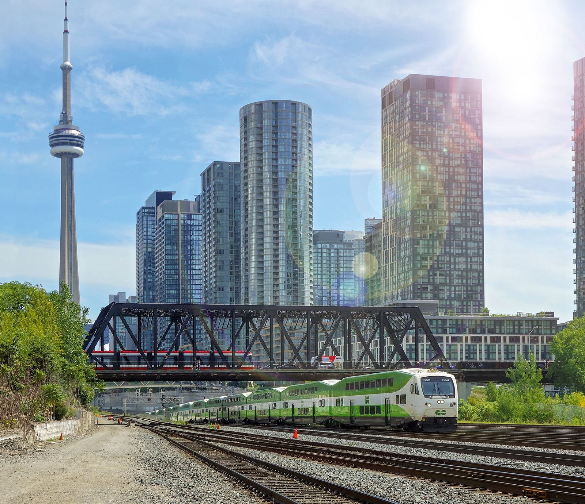

Masonry is successfully executing some of the world’s most complex infrastructure projects, and these projects are sure to shape the next chapter in Aecon’s long and storied history. The diversification of Aecon across its Construction and Concessions segments reflects a dynamic scope that ranges from mega-integrated projects, to medium-sized jobs, to local work. Building the future is what we do every day.
150+ years in the industry means Masonry’s roots in construction and infrastructure development run deep. We are a trusted contractor to numerous public entities and Public-Private Partnerships (P3s) across Canada and abroad. Our Construction segment includes all aspects of the construction of both public and private infrastructure in the Civil, Urban Transportation, Nuclear, Utility, and Industrial sectors. We operate primarily in Canada but selectively pursue International initiatives.

Our Concessions segment activities include the development, financing, design, building, and operation of construction projects. We do this by way of public-private partnership contract structures, as well as by integrating the services of all project participants and harnessing the many strengths and capabilities of Aecon. The concessions segment focuses primarily on the development of domestic and international P3 projects, private finance solutions, investment and management services, operations and maintenance, and actively participating in development teams.